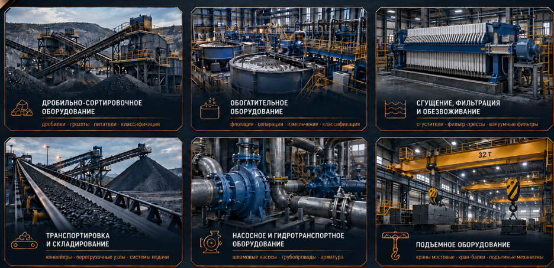
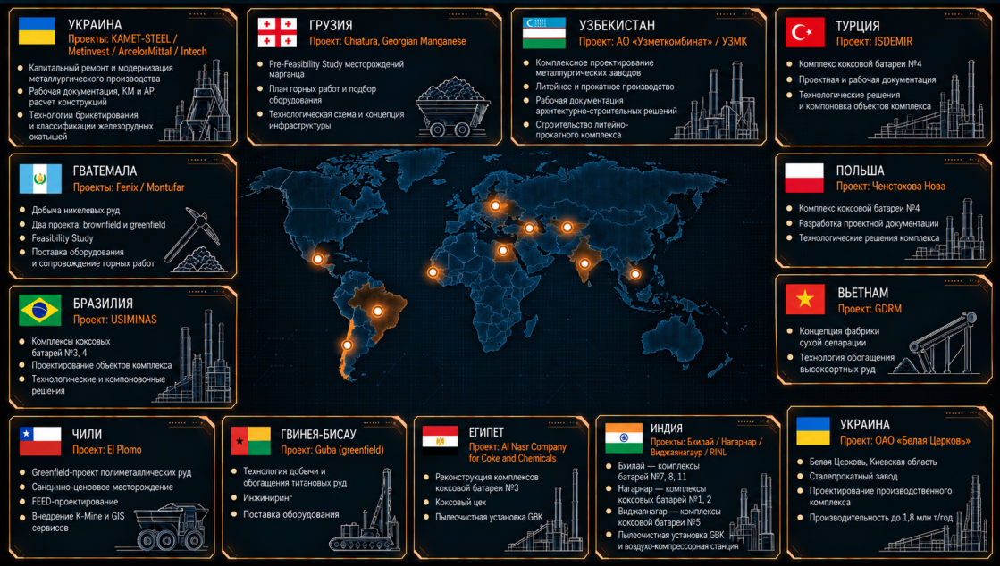

Горные работы и геология
Планирование и оптимизация горных работ · геологическое моделирование · оценка запасов · маркшейдерия · GIS · разрешительная документация
Инжиниринг, технологическая проработка, проектирование, подбор оборудования и инженерное сопровождение промышленных проектов.
Обсудить проектMineral Solutions — проектно-инжиниринговая компания, специализирующаяся на комплексных решениях для горнодобывающей, обогатительной и металлургической промышленности.
Деятельность компании охватывает ключевые этапы реализации проектов — от технической концепции и проектирования до подбора и поставки оборудования и инженерного сопровождения.
В основе Mineral Solutions — практический отраслевой опыт, инженерная экспертиза и понимание полного производственного цикла — от добычи сырья до получения готового продукта.
Планирование и оптимизация горных работ · геологическое моделирование · оценка запасов · маркшейдерия · GIS · разрешительная документация
Технологические схемы · проектирование обогатительных фабрик · материальные балансы · оптимизация процессов · модернизация производств
Исследование сырья · испытания на обогатимость · минералогия · проверка технологических схем · интерпретация результатов
ТЭО · PFS · FEED · проектная и рабочая документация · генплан · промышленные здания и сооружения · инженерные сети
Техническое обследование · аудит технологических линий · анализ узких мест · реконструкция и модернизация
Технические требования · анализ производителей · адаптация · комплектация · техническое сопровождение поставки
Кликните по направлению, чтобы увидеть типовое оборудование, состав решений и формат нашей инженерной работы.

Выберите точку на карте — справа откроется страна, проекты и краткое описание выполненных работ.

Опыт команды в горных работах, обогащении полезных ископаемых и промышленном инжиниринге.
Бурый уголь · Greenfield · Feasibility / Working Design / Development
Никелевая руда · Brownfield · PFS / Engineering / Equipment Supply
Никелевая руда · Greenfield · Feasibility Study / Engineering / Equipment Supply
Ильменит-цирконовые руды / минеральные пески · Greenfield + Brownfield
Свинцово-цинковая руда · Greenfield · EPCM
Тяжёлые минеральные концентраты / монацит · Technology Development / Implementation
Титановые руды · Greenfield · Technology Development / Engineering / Equipment Supply
Комплекс сгущения хвостов · Basic Engineering / FEED → Detailed Engineering → Supervision
Железорудное сырьё / окатыши · Technology Development / Engineering
Металлургическое производство / ferroalloys · Brownfield · FS / EPC
Железная руда / обратная флотация · Brownfield / Modernization · Feasibility Study
Техническая, технологическая и экономическая проработка проекта.
Планы горных работ · схемы · материальные балансы · параметры процессов.
Генплан · здания и сооружения · конструкции · инженерные сети.
Требования · спецификации · подбор · адаптация.
Обследование · ограничения · варианты технического перевооружения.
Подготовка документации · сопровождение экспертизы · отработка замечаний.
Технический аудит · независимая оценка · due diligence · сопровождение заказчика.
Горные работы · обогащение · металлургия · выбор технологических решений.
Оценка объектов, оборудования и инфраструктуры · рекомендации по модернизации.
Отдельные разделы или комплексная проектная и рабочая документация.
Горная · технологическая · строительная · инфраструктурная части проекта.
Съёмка · контроль · расчёты объёмов · документация · GIS-поддержка.
Опишите проект или вопрос — сообщение будет направлено на office@mineral-solutions.com.ua